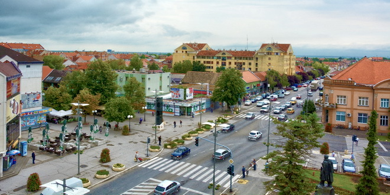

Општина Инђија налази се у Сремском округу, у јужном делу Војводине, 30 km југоисточно од Новог Сада и 40 km северозападно од Београда. Састоји се од 11 месних заједница, а седиште општине је град Инђија. Покрива подручје од 384 km². Према подацима са последњег пописа 2022. године у општини је живело 43.443 становника.  Притиснути за више информација